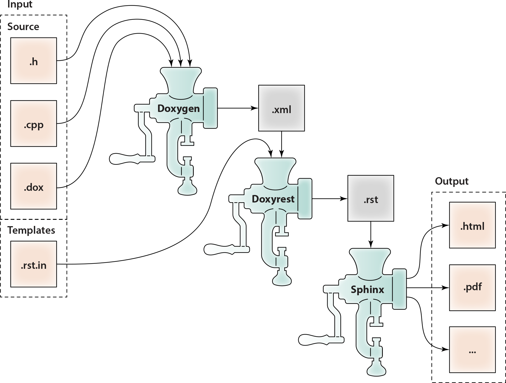

Architectural Overview
In a Nutshell
Doxygen stage:
Doxygen parses source input (
.c,.cpp,.h,.dox);Doxygen generates XML database (
.xml) containing the representation of the source tree (including documentation extracted from the comments);Note
You can replace Doxygen with your own tool for
.xmldatabase generation.
Doxyrest stage:
Doxyrest parses Doxygen XML database (
.xml);Doxyrest passes to Lua-base string template engine:
The in-memory representation of Doxygen XML database;
Lua frames (
.rst.in) containing Lua-driven templates of reStructuredText.
String template engine generate reStructuredText (
.rst);Note
You can replace Lua
.rst.inframes with your own ones for customization.
Sphinx stage:
Sphinx parses reStructuredText (
.rst);Sphinx generates final documentation:
HTML pages (
.html,.js);PDF file (
.pdf);…
Details
While designing Doxyrest I tried to re-use existing documentation generation tools and techniques as much as possible.
Re-used Toolset
Developers already know how to document their C/C++/Java code using Doxygen-style comments like:
/*!
\brief This is a brief documentation for class Foo.
This is a detailed documentation for class Foo.
...
*/
class Foo
{
// ...
}
Why invent and teach people a new way of documenting their code? Let’s keep using the same Doxygen-style comments!
Next. Doxygen itself is doing a great job at extracting those comments from the C/C++/Java source code and building a XML database of the source structure. Great! For traditional C-family languages we are going to re-use Doxygen as the first stage of documentation generation pipeline.
Moving on. Sphinx is capable of generating beautiful documentation in multiple output formats, most important of which are – at least, for us here at Tibbo – HTML and PDF. Even more importantly, Sphinx is completely customizable using themes and Python scripting. So why look any further? Let’s use Sphinx as a back-end of our pipeline.
The only missing part of equation is mid-end – we need to build a bridge between Doxygen and Sphinx. That’s where Doxyrest comes in.
Building a Bridge
The job of Doxyrest is to take a Doxygen-generated XML database and convert it to reStructuredText – the input format of Sphinx.
The biggest challenge here is to maintain independence from the programming language of the original sources. Let me elaborate.
Structure of source files can be described more or less uniformly for most traditional programming languages – as a tree of hierarchical namespaces (or in Doxygen terminology, compounds) and namespace members. All these namespaces and members can have different types, of course: struct, class, variable, function etc. Doxygen XML could be considered as a standardized way of storing information about the source file structure.
But what about syntactic difference between the languages? When we generate documentation we have to take a Doxygem XML database (which holds a structure of source files to be documented) and then re-construct declarations of all the documentable items – and do so using the syntax of the target language!
I personally needed Doxyrest for documenting C, C++ and Jancy APIs. Even though all these languages belong to the C-family of programming languages, declarations may look quite different for classes, enums, properties, events etc. And if we move away from the C-family, the problem of customizing the documentation output becomes even more evident.
In Doxyrest this problem is solved by using a Lua-based string template engine. The templates for the output .rst files are defined in form of Lua replaceable frames .rst.in. So you can always create your own Lua frames .rst.in. Lua code inside those frames can iterate over Doxygen-XML-encoded representation of the original user source code and build whatever syntactic output is required for your particular language and your project.